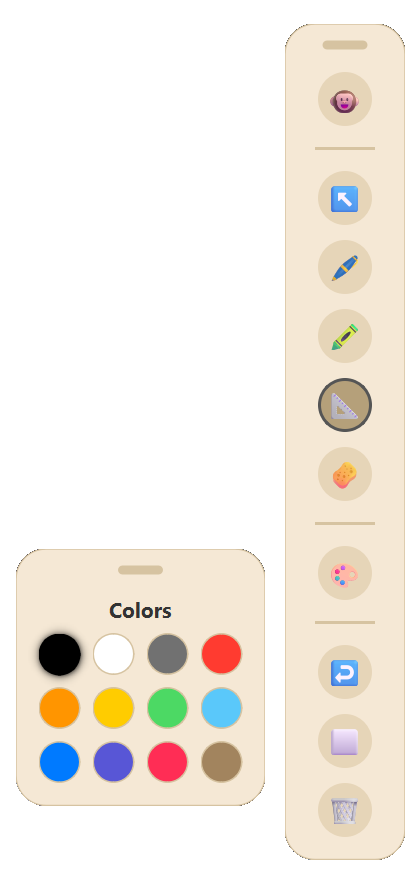
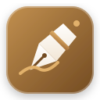
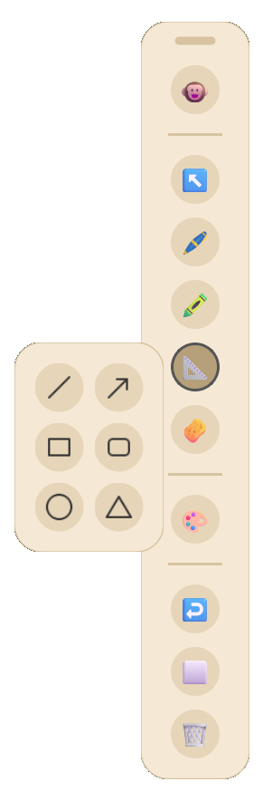
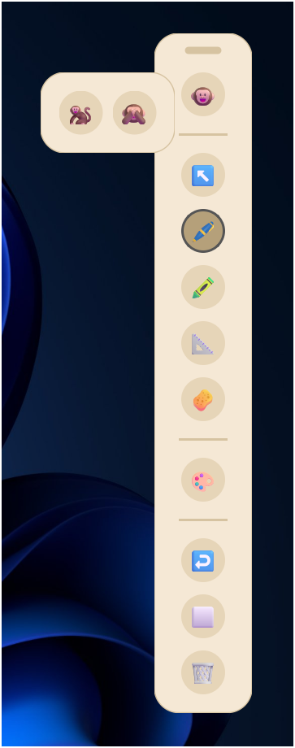

12-Color Palette
Palette & Precision Sizer
12 high-contrast curated swatches with instant stroke-width adjustments, non-blocking opacity fades, and auto-persistence to disk.

Pen 11Hardware-accelerated Direct3D 11 inking, 60 FPS fluid animation engine, Smart Vector Objects with OBB rotation, persistent settings storage, and near 0% idle CPU usage. Completely free and open-source.
Modular, floating translucent UI panels that adapt to your screen without stealing window focus or cluttering presentations.

12 high-contrast curated swatches with instant stroke-width adjustments, non-blocking opacity fades, and auto-persistence to disk.

Lines, Arrows, Rectangles, Rounded Rectangles, Ellipses, and Triangles with 45° angle snapping and 400ms gesture recognition.

Instantly switch between Active Ink (🐵), Cursor Pass-Through (🐒), and smooth 240ms cubic-bezier minimal pill collapse (🙈).
Every component in Pen 11 is built from the ground up to respect your hardware and streamline screen annotations.
Direct3D 11 native swapchain combined with QPropertyAnimation (InOutCubic 240ms) delivers seamless toolbar collapse/expand morphing and non-blocking InOutSine opacity fades with zero visual stutter or layout fighting.
Color Palette, Shapes Menu, and Cursor Toolbars function as modular floating panels. Attached panels glide seamlessly during drag, and remember customized screen coordinates independently.
Procedural high-DPI tool cursors and instant button tooltips update at 120Hz without stealing OS window focus from Word, web browsers, or presentation slide decks.
Pure vector strokes track their Oriented Bounding Box geometry during centroid rotation, scaling, and dragging. Hold for 400ms to auto-snap strokes into perfect geometric shapes.
StorageManager auto-saves custom tool sizes, active swatches, and coordinates to disk. Local IPC socket locks ensure a single instance runs with zero hotkey conflicts.
Draw infinitely with confidence. Pen 11 handles up to 50,000 simultaneous on-screen strokes with a massive 5,000-step memory-capped Undo history, zero raster degradation, and 0.0% background idle CPU usage.
Side-by-side performance analysis on Windows 11 Desktop Window Manager (DWM).
vs ~380 MB on Electron tools (87% less RAM)
Event loop fully paused when not drawing
Direct3D 11 sub-millisecond dirty-rect blit
Standalone portable executable. Zero install.
System-wide keyboard shortcuts that operate anywhere across Windows 11. Test them in real-time or search below.
| Action | Key Combination | Description |
|---|
Completely open source and modular. Safe to inspect, modify, and compile on your own machine.
# 1. Clone repository
git clone https://github.com/Narayan6204/Pen-11.git
cd "Pen-11"
# 2. Install dependencies
pip install -r requirements.txt
# 3. Launch live Python application
python main.py
# 4. Compile optimized standalone executable
python -m PyInstaller main.spec --noconfirmFrameless Direct3D overlay, 60 FPS animations & event dispatcher.
Oriented Bounding Box geometry, rotation matrix & handle physics.
Modular floating panels with non-blocking InOutSine opacity fades.
Local IPC socket mutex guard preventing duplicate instances.
Atomic JSON persistence for tool sizes, swatches & coordinates.
50,000-stroke vector pipeline & 5,000-step memory-safe command stack.
"While taking my NIELIT 'O Level' course, I found myself in need of a good screen annotation tool. However, I quickly realized that most existing options were either locked behind paywalls, bloated with unnecessary features, or suffered from laggy, outdated user interfaces.
Frustrated by these limitations, I decided to build my own solution using AI. The result is Pen 11—a blazing-fast, highly responsive, and meticulously optimized screen marker that respects your system's resources."
— Narayan Dev (Creator & Maintainer)
If Pen 11 helped you in your studies or teaching, buy me a coffee by scanning with any UPI app!